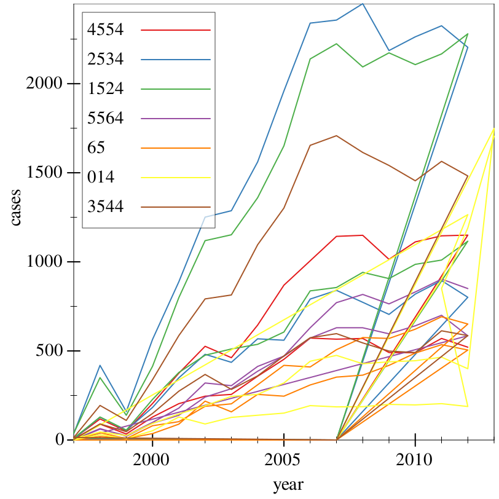
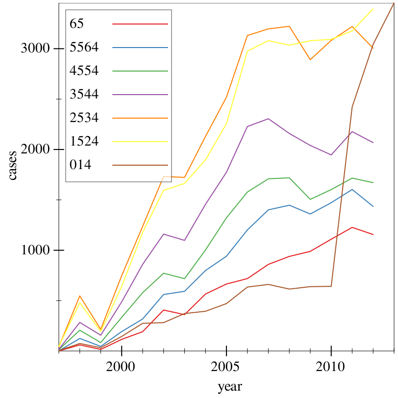

7 Data wrangling, 201: Wrangle harder
This section of the tutorial is based off of R for Data Science Chapter 12, by Hadley Wickham.
The Sawzall API in this section is not finalized. There are no guarantees about backwards compatibility.
Each variable has its own column.
Each observation has its own row.
Each value has its own cell.
Unfortunately, the overwhelming majority of data that you will encounter in the real world™ is untidy. Most data is managed through spreadsheet software like Excel, and is optimized for data entry, not analysis or visualization.
> (define who (df-read/csv "data/who.csv" #:na "NA")) > (df-del-series! who "") > (show who)
data-frame: 7240 rows x 60 columns
┌──────────┬────────────┬────────────┬────────────┬───────────┬──────────┐
│newrel_f65│new_ep_f4554│new_ep_f3544│new_sp_m3544│new_sp_f014│new_sp_f65│
├──────────┼────────────┼────────────┼────────────┼───────────┼──────────┤
│#f │#f │#f │#f │#f │#f │
├──────────┼────────────┼────────────┼────────────┼───────────┼──────────┤
│#f │#f │#f │#f │#f │#f │
├──────────┼────────────┼────────────┼────────────┼───────────┼──────────┤
│#f │#f │#f │#f │#f │#f │
├──────────┼────────────┼────────────┼────────────┼───────────┼──────────┤
│#f │#f │#f │#f │#f │#f │
├──────────┼────────────┼────────────┼────────────┼───────────┼──────────┤
│#f │#f │#f │#f │#f │#f │
├──────────┼────────────┼────────────┼────────────┼───────────┼──────────┤
│#f │#f │#f │#f │#f │#f │
└──────────┴────────────┴────────────┴────────────┴───────────┴──────────┘
7234 rows, 54 cols elided
(use (show df everything #:n-rows 'all) for full frame)
> (df-series-names who)
'("newrel_f65"
"new_ep_f4554"
"new_ep_f3544"
"new_sp_m3544"
"new_sp_f014"
"new_sp_f65"
"new_sn_m3544"
"new_ep_f65"
"newrel_f5564"
"newrel_f1524"
"iso2"
"country"
"new_sn_m65"
"new_sn_f5564"
"newrel_m1524"
"new_ep_f1524"
"newrel_m4554"
"new_ep_m5564"
"new_sp_f1524"
"new_sn_m5564"
"newrel_m65"
"new_ep_f5564"
"new_ep_m1524"
"newrel_f014"
"iso3"
"new_sp_f2534"
"new_ep_m4554"
"new_sp_f3544"
"new_ep_m014"
"new_sp_m65"
"new_ep_m2534"
"newrel_f4554"
"new_sp_m5564"
"new_ep_f014"
"new_sn_f65"
"new_sp_m2534"
"new_sn_m014"
"new_sn_m2534"
"new_sn_f2534"
"new_sp_m014"
"new_sp_f4554"
"new_ep_f2534"
"new_sn_f014"
"new_sp_m1524"
"year"
"new_sp_f5564"
"newrel_m5564"
"new_sn_f3544"
"new_sn_m4554"
"new_sn_f1524"
"new_sn_f4554"
"new_sn_m1524"
"new_sp_m4554"
"new_ep_m3544"
"newrel_m014"
"newrel_f2534"
"newrel_m2534"
"newrel_m3544"
"new_ep_m65"
"newrel_f3544")
Anyway, wow. Ouch. This is a pretty typical dataset: it has redundant columns, weird variable codes, and missing values abound. Chances are, it was made in spreadsheet software. So, we’ll need multiple steps to try and tidy it.
country, iso2, and iso3 are variables that specify the country, the latter two being country codes. We don’t need the latter two, then.
year is clearly a variable.
Given names like newrel_f65 and new_ep_f4554, we can reasonably infer that these are values of some mega-variable.
So, what we want to do is take the names of each new..., and the values of each of those columns, and turn them into two columns: one representing the former name of the column, and one representing the value. Sawzall provides an operation for turning column names that are actually values into a new column: pivot-longer.
To use pivot-longer, we need three things: the set of columns whose names are values and not variables (in this case, everything starting with new), a name of a variable to move the column names to (in this case, key, since we don’t know what these names mean yet), and a name of a variable to move the column values to (we know it’s TB cases, so we’ll call it cases).
> (~> who (pivot-longer (starting-with "new") #:names-to "key" #:values-to "cases") show)
data-frame: 405440 rows x 6 columns
┌────┬──────────┬────┬───────────┬─────┬────┐
│year│key │iso2│country │cases│iso3│
├────┼──────────┼────┼───────────┼─────┼────┤
│1980│newrel_f65│AF │Afghanistan│#f │AFG │
├────┼──────────┼────┼───────────┼─────┼────┤
│1981│newrel_f65│AF │Afghanistan│#f │AFG │
├────┼──────────┼────┼───────────┼─────┼────┤
│1982│newrel_f65│AF │Afghanistan│#f │AFG │
├────┼──────────┼────┼───────────┼─────┼────┤
│1983│newrel_f65│AF │Afghanistan│#f │AFG │
├────┼──────────┼────┼───────────┼─────┼────┤
│1984│newrel_f65│AF │Afghanistan│#f │AFG │
├────┼──────────┼────┼───────────┼─────┼────┤
│1985│newrel_f65│AF │Afghanistan│#f │AFG │
└────┴──────────┴────┴───────────┴─────┴────┘
405434 rows, 0 cols elided
(use (show df everything #:n-rows 'all) for full frame)
We now have significantly fewer columns, and way more rows, since we transformed all of those messy columns into two. Note the (starting-with "new"): this is a slice spec, a domain-specific language for selecting columns from data. See slice’s documentation for more details.
> (~> who (pivot-longer (starting-with "new") #:names-to "key" #:values-to "cases") (drop-na "cases") show)
data-frame: 76046 rows x 6 columns
┌────┬────┬──────────┬───────────────────┬─────┬────┐
│year│iso2│key │country │cases│iso3│
├────┼────┼──────────┼───────────────────┼─────┼────┤
│2013│AL │newrel_f65│Albania │34 │ALB │
├────┼────┼──────────┼───────────────────┼─────┼────┤
│2013│DZ │newrel_f65│Algeria │352 │DZA │
├────┼────┼──────────┼───────────────────┼─────┼────┤
│2013│AD │newrel_f65│Andorra │0 │AND │
├────┼────┼──────────┼───────────────────┼─────┼────┤
│2013│AO │newrel_f65│Angola │314 │AGO │
├────┼────┼──────────┼───────────────────┼─────┼────┤
│2013│AI │newrel_f65│Anguilla │0 │AIA │
├────┼────┼──────────┼───────────────────┼─────┼────┤
│2013│AG │newrel_f65│Antigua and Barbuda│1 │ATG │
└────┴────┴──────────┴───────────────────┴─────┴────┘
76040 rows, 0 cols elided
(use (show df everything #:n-rows 'all) for full frame)
The first three letters are either new or old, denoting new or old cases of TB. We don’t have any old cases in the provided data. So, in this case, we have a new case
- The next two letters denote the type of TB:
rel stands for relapse
ep stands for extrapulmonary TB (this case)
sn stands for pulmonary TB that could not be diagnosed by a pulmonary smear (smear negative)
sp stands for pulmonary TB that could be diagnosed by a pulmonary smear (smear positive)
The sixth letter gives the sex of the patient, either m or f for male and female, respectively.
The remaining numbers give an age group. For example, 014 is 0-14 years old, 4554 is 45-54 years old, and 65 is 65+.
> (~> who (pivot-longer (starting-with "new") #:names-to "key" #:values-to "cases") (drop-na "cases") (create [key (key) (string-replace key "newrel" "new_rel")]) show)
data-frame: 76046 rows x 6 columns
┌────┬───────────┬────┬───────────────────┬─────┬────┐
│year│key │iso2│country │cases│iso3│
├────┼───────────┼────┼───────────────────┼─────┼────┤
│2013│new_rel_f65│AL │Albania │34 │ALB │
├────┼───────────┼────┼───────────────────┼─────┼────┤
│2013│new_rel_f65│DZ │Algeria │352 │DZA │
├────┼───────────┼────┼───────────────────┼─────┼────┤
│2013│new_rel_f65│AD │Andorra │0 │AND │
├────┼───────────┼────┼───────────────────┼─────┼────┤
│2013│new_rel_f65│AO │Angola │314 │AGO │
├────┼───────────┼────┼───────────────────┼─────┼────┤
│2013│new_rel_f65│AI │Anguilla │0 │AIA │
├────┼───────────┼────┼───────────────────┼─────┼────┤
│2013│new_rel_f65│AG │Antigua and Barbuda│1 │ATG │
└────┴───────────┴────┴───────────────────┴─────┴────┘
76040 rows, 0 cols elided
(use (show df everything #:n-rows 'all) for full frame)
> (~> who (pivot-longer (starting-with "new") #:names-to "key" #:values-to "cases") (drop-na "cases") (create [key (key) (string-replace key "newrel" "new_rel")]) (separate "key" #:into '("new" "type" "sex-age") #:separator "_") (show ["country" "new" "type" "sex-age"]))
data-frame: 76046 rows x 8 columns
┌───────────────────┬───┬────┬───────┐
│country │new│type│sex-age│
├───────────────────┼───┼────┼───────┤
│Albania │new│rel │f65 │
├───────────────────┼───┼────┼───────┤
│Algeria │new│rel │f65 │
├───────────────────┼───┼────┼───────┤
│Andorra │new│rel │f65 │
├───────────────────┼───┼────┼───────┤
│Angola │new│rel │f65 │
├───────────────────┼───┼────┼───────┤
│Anguilla │new│rel │f65 │
├───────────────────┼───┼────┼───────┤
│Antigua and Barbuda│new│rel │f65 │
└───────────────────┴───┴────┴───────┘
76040 rows, 4 cols elided
(use (show df everything #:n-rows 'all) for full frame)
> (~> who (pivot-longer (starting-with "new") #:names-to "key" #:values-to "cases") (drop-na "cases") (create [key (key) (string-replace key "newrel" "new_rel")]) (separate "key" #:into '("new" "type" "sex-age") #:separator "_") (slice (not ["new" "iso2" "iso3"])) show)
data-frame: 76046 rows x 5 columns
┌────┬────┬───────────────────┬─────┬───────┐
│type│year│country │cases│sex-age│
├────┼────┼───────────────────┼─────┼───────┤
│rel │2013│Albania │34 │f65 │
├────┼────┼───────────────────┼─────┼───────┤
│rel │2013│Algeria │352 │f65 │
├────┼────┼───────────────────┼─────┼───────┤
│rel │2013│Andorra │0 │f65 │
├────┼────┼───────────────────┼─────┼───────┤
│rel │2013│Angola │314 │f65 │
├────┼────┼───────────────────┼─────┼───────┤
│rel │2013│Anguilla │0 │f65 │
├────┼────┼───────────────────┼─────┼───────┤
│rel │2013│Antigua and Barbuda│1 │f65 │
└────┴────┴───────────────────┴─────┴───────┘
76040 rows, 0 cols elided
(use (show df everything #:n-rows 'all) for full frame)
> (~> who (pivot-longer (starting-with "new") #:names-to "key" #:values-to "cases") (drop-na "cases") (create [key (key) (string-replace key "newrel" "new_rel")]) (separate "key" #:into '("new" "type" "sex-age") #:separator "_") (slice (not ["new" "iso2" "iso3"])) (separate "sex-age" #:into '("sex" "age") #:separator 1) show)
data-frame: 76046 rows x 6 columns
┌────┬───────────────────┬────┬─────┬───┬───┐
│year│country │type│cases│age│sex│
├────┼───────────────────┼────┼─────┼───┼───┤
│2013│Albania │rel │34 │65 │f │
├────┼───────────────────┼────┼─────┼───┼───┤
│2013│Algeria │rel │352 │65 │f │
├────┼───────────────────┼────┼─────┼───┼───┤
│2013│Andorra │rel │0 │65 │f │
├────┼───────────────────┼────┼─────┼───┼───┤
│2013│Angola │rel │314 │65 │f │
├────┼───────────────────┼────┼─────┼───┼───┤
│2013│Anguilla │rel │0 │65 │f │
├────┼───────────────────┼────┼─────┼───┼───┤
│2013│Antigua and Barbuda│rel │1 │65 │f │
└────┴───────────────────┴────┴─────┴───┴───┘
76040 rows, 0 cols elided
(use (show df everything #:n-rows 'all) for full frame)
> (define tidy-who (~> who (pivot-longer (starting-with "new") #:names-to "key" #:values-to "cases") (drop-na "cases") (create [key (key) (string-replace key "newrel" "new_rel")]) (separate "key" #:into '("new" "type" "sex-age") #:separator "_") (slice (not ["new" "iso2" "iso3"])) (separate "sex-age" #:into '("sex" "age") #:separator 1)))
> (~> tidy-who (where (country) (string=? country "Afghanistan")) show)
data-frame: 244 rows x 6 columns
┌────┬────┬────┬───────────┬─────┬───┐
│year│age │type│country │cases│sex│
├────┼────┼────┼───────────┼─────┼───┤
│1997│3544│sp │Afghanistan│3 │m │
├────┼────┼────┼───────────┼─────┼───┤
│1998│3544│sp │Afghanistan│90 │m │
├────┼────┼────┼───────────┼─────┼───┤
│1999│3544│sp │Afghanistan│47 │m │
├────┼────┼────┼───────────┼─────┼───┤
│2000│3544│sp │Afghanistan│149 │m │
├────┼────┼────┼───────────┼─────┼───┤
│2001│3544│sp │Afghanistan│274 │m │
├────┼────┼────┼───────────┼─────┼───┤
│2002│3544│sp │Afghanistan│368 │m │
└────┴────┴────┴───────────┴─────┴───┘
238 rows, 0 cols elided
(use (show df everything #:n-rows 'all) for full frame)
> (~> tidy-who (where (country) (string=? country "Afghanistan")) (graph #:data _ #:mapping (aes #:x "year" #:y "cases" #:discrete-color "age") (lines))) 
> (~> tidy-who (where (country) (string=? country "Afghanistan")) (group-with "year" "age") (aggregate [cases (cases) (sum cases)]) ungroup (graph #:data _ #:mapping (aes #:x "year" #:y "cases" #:discrete-color "age") (lines))) 
Finally, we have a plot, and we can determine that Afghanistan had a sudden spike in TB cases among ages 0-14 in 2010-2013.